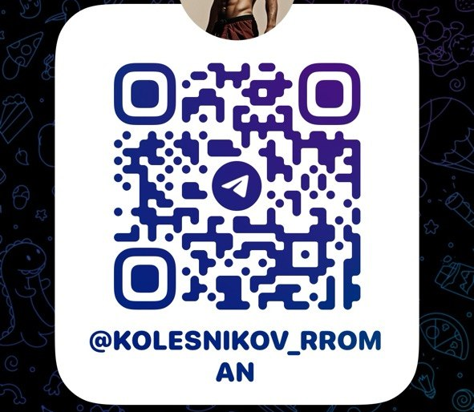
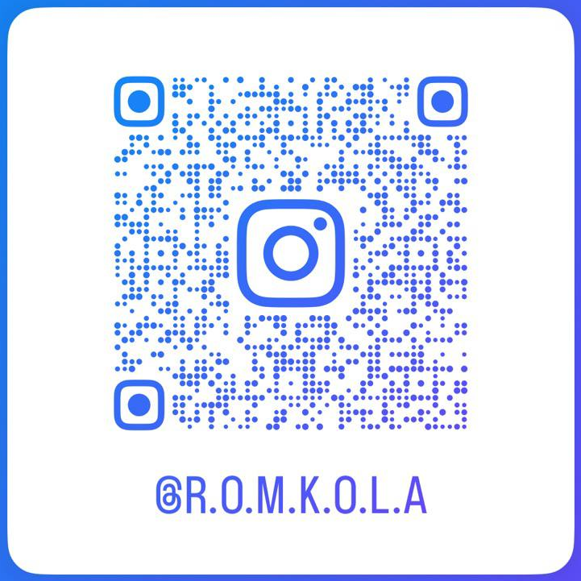
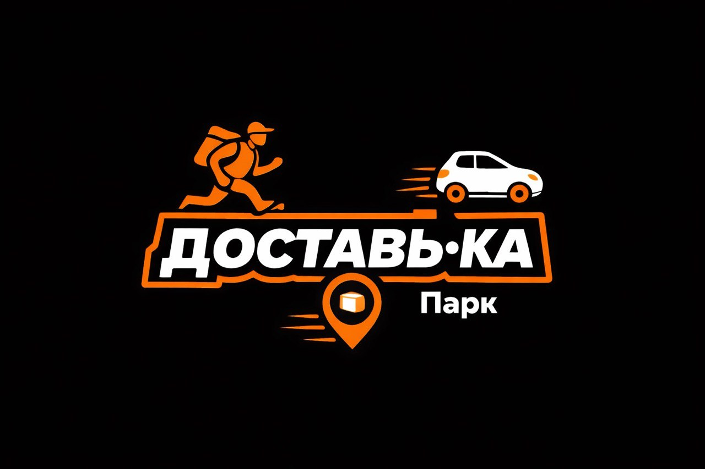

Предприниматель, никогда не работал в найме. Родился в Благовещенске, окончил ДальГАУ.
Во время университета начал челночный бизнес с Китаем — более 3000 пересечений границы.
Запускал проекты в разных нишах: торговля, услуги, онлайн-сервисы. В ковид запустили IT-проект (кэшбэк-сервис).
В 2023 году переехал в Москву для развития новых проектов.
Женат, многодетный отец, занимаюсь спортом.
С 2007 начал зарабатывать на доставке товаров из Китая — выстроил систему работы и большую агентскую сеть. Опыт работы в условиях многозадачности и неопределённости.
В 2013 открыл клининговую компанию (химчистка мебели, ковров, матрасов, штор на объекте клиента), зарегистрировал ИП. Закрыл в 2020-м — не было роста.
Параллельно вёл несколько направлений с минимальным участием: офлайн-магазин чая/кофе/сувениров, интернет-магазины китайских товаров, прокат электро- и строительного инструмента, вертикальная печать на стенах, SMM-агентство, интернет-трафик, консалтинг.
В 2020 с партнёрами запустил IT-проект — кэшбэк-платформу с прицелом на маркетплейс и собственную CRM. Дошли до 20K юзеров и тысячи подключённых организаций. Лично провёл 1000+ встреч с предпринимателями (кастдев → презентация → продажа). Из проекта вышел.
В 2024 занялся автоарендой — на пике 30 машин. Зафиксировал убыток ~5 млн и вышел. Сопутствующей историей осталась онлайн-диспетчерская Яндекс — сегодня это основной фокус.
Случайно попал в сферу автоаренды после переезда — важно было быстро запустить новый источник дохода.
Мне интересно превращать активы и процессы в системный денежный поток.
Сейчас проект решает две задачи:
• закрытие базовых финансовых потребностей
• освобождение времени и ресурсов для более масштабных проектов.
Модель относительно простая: минимальная операционная нагрузка, небольшая команда. Ключевая задача — организация стабильного потока трафика и удержание курьеров.
Первый закал — челночный бизнес с Китаем: более 3000 пересечений границы, агентская сеть, постоянная многозадачность и неопределённость. Научился запускать процессы с нуля и держать их в хаосе.
Главная школа продаж — IT-проект: 1000+ личных встреч с предпринимателями. Это дало огромную насмотренность — кто и как строит бизнес, где он ломается.
Самый тяжёлый вызов — автоаренда: вырос до 30 машин, но это оказался «кровавый» бизнес. Выгорел, зафиксировал убыток ~5 млн и вышел — вовремя признать ошибку и не тонуть в проекте оказалось важнее гордости.
Из этой истории и родился нынешний фокус — парк ДОСТАВЬ-КА: та же инфраструктура, но кратно легче в операционке.
Онлайн-парк курьеров в экосистеме Яндекс Доставки.
Мы занимаемся:
• привлечением и подключением курьеров
• сопровождением и поддержкой работы в системе
• развитием сообщества и реферальной сети
Клиенты: курьеры (пешие, вело, авто, грузовые), работающие в сервисах Яндекс Доставки.
Модель дохода: комиссия парка с выполненных заказов курьеров.
Вызов с налоговым регулированием (СМЗ / ИП / Патент) — закрыт.
На переходе парк потерял 60–70% курьеров. За 3 недели за счёт новых AI-инструментов (благодаря Аномалии) вернулись и выросли до 140 активных курьеров.
Настроили системы:
• привлечения трафика
• обработки заявок и онбординга
• работы с клиентами
Главный вызов сейчас — текучка и рост конверсий.
По ДОСТАВЬ-КА этап пройден — что делать понятно, дальше просто работаем и растём.
Новый запрос — запуск новых продуктов. Хочу превратить AI-автоматизации, которые я строил под себя, в продакшен-версии для рынка.
Очерёдность запуска:
• Avitoma — Avito-автоматизация (первой)
• Громко — контент-платформа (следом)
• VROOM — сервис для автоаренды (строим параллельно)
От десятки нужно:
• свежий взгляд со стороны — упаковка, позиционирование, точки входа
• новые идеи и гипотезы под продуктизацию
• нетворкинг и выход на потенциальную базу клиентов через ниши участников
• помощь, чтобы получить первые деньги с новых ниш и тем
Большая насмотренность в бизнесе — тысяча встреч с предпринимателями, понимание типичных ошибок и слабых мест проектов.
Опыт vibe-coding — за 2 месяца собрал на AI собственный стек продуктов. Подскажу, с чего начать, какие инструменты использовать и какие базовые ошибки сразу обойти, чтобы ускориться.
Свежий взгляд со стороны — в чужом бизнесе проще увидеть проблему, точку роста или неэффективность.
Связи и опыт работы с Китаем — поиск товаров, производство, логистика, доставка, таможня.
Интерес к крипторынку — делюсь наблюдениями и идеями.
Нетворк и нестандартные решения — контакты, помощь в поиске ресурсов и партнёров в сложных ситуациях.
Люблю разбираться в системах и находить, где в них спрятаны деньги. И всегда на позитиве — лёгкий на подъём, импровизирую по ситуации.
ДОСТАВЬ-КА стал стабильной базой и полигоном, на котором я отрабатываю AI-стек. Главный фокус сейчас — запуск продакшен-версий своих автоматизаций (Avitoma → Громко → VROOM) и первые платящие клиенты.
Работаем вдвоём с женой — строим архитектуру под массовое подключение, считаем юнит, оформляем юридически.
Открыт к честной обратной связи и идеям по:
• упаковке и позиционированию продуктов
• юнит-экономике и финмодели
• каналам выхода к первым клиентам
• пилотам и связкам внутри десятки
Готов открыто обсуждать любые аспекты — и сам делюсь практикой по AI-инструментам и vibe-coding'у.